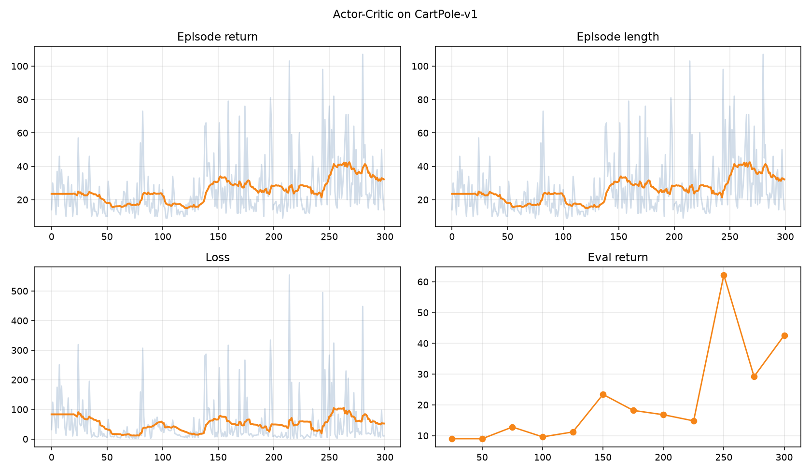
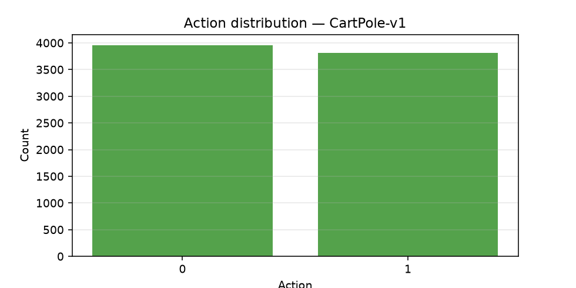
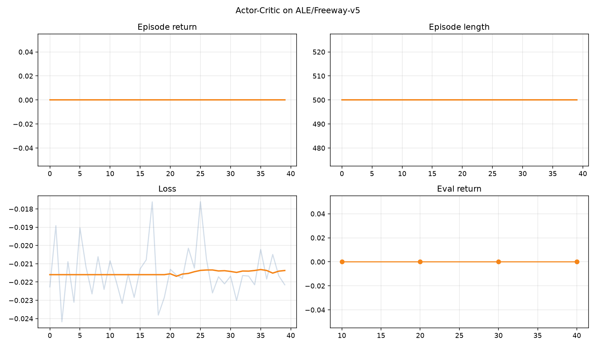
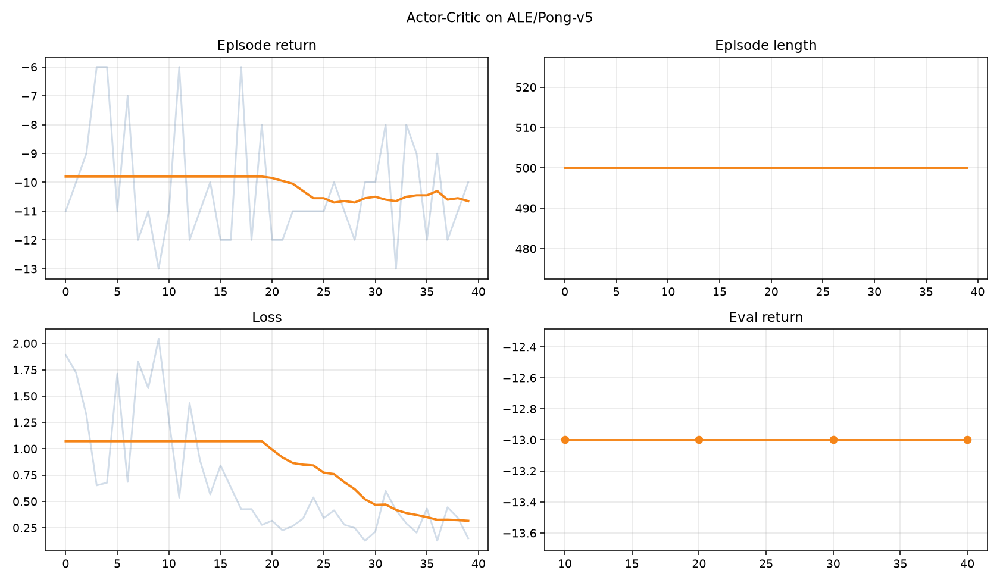

短学期 LecExp06
Monte Carlo Actor-Critic 实现——共享编码器、Advantage、熵正则，CartPole + Freeway/Pong 实测
实验目标
- 实现基础 Actor-Critic（共享编码器 + 策略头 / 价值头）
- 用 Monte Carlo return 构造 Advantage
- 联合优化 policy loss / value loss / entropy
- 至少在 两个 Atari 环境上测试（本实验：Freeway、Pong），并以 CartPole 验证实现
- 可视化回报、损失、动作分布
前置：Lec06 理论、LecExp05 DQN 对照、课程 notebook materials/exp6_ac.ipynb。
环境与依赖
conda activate rl-course
pip install gymnasium[atari,accept-rom-license] ale-py torch matplotlib numpy
| 环境 | 用途 | 观测 / 动作 |
|---|---|---|
CartPole-v1 | 调试实现（非 Atari 成绩） | 向量 4 维 / Discrete(2) |
ALE/Freeway-v5 | 正式实验 | 预处理后 (4,84,84) / Discrete(3) |
ALE/Pong-v5 | 正式实验 | 同上 / Discrete(6) |
预处理（Atari 推荐扩展）：灰度 84×84、frame_skip=4、4 帧堆叠——与笔记及 Exp5 一致，显著降低原始 RGB 难度。
网络结构
class ActorCriticNet(nn.Module):
def forward(self, x):
z = self.shared(self.encoder(x)) # 共享特征
logits = self.policy_head(z) # Actor → Categorical
value = self.value_head(z).squeeze(-1) # Critic → V(s)
return logits, value
- 图像：CNN encoder → Linear(256)
- 向量：MLP(128-128)
- 动作：
Categorical(logits=...).sample()（非 ε-greedy）
Advantage 与损失
advantages = returns - values_t.detach() # stopgrad：基线不反向进 Critic
policy_loss = -(log_probs_t * advantages).mean()
value_loss = F.mse_loss(values_t, returns)
entropy_loss = -entropies_t.mean() # 最小化总损失 = 最大化熵
loss = policy_loss + c_v * value_loss + c_e * entropy_loss
| 项 | 作用 |
|---|---|
| 提高动作概率，反之降低 | |
| Critic 拟合 ，成为更好基线 | |
| 防止策略过早塌缩 |
训练主循环（要点）
每个 episode：采样整条轨迹 → 算 → 只更新一次（Monte Carlo AC）。
for episode:
collect (r, logπ, V, H) until done / max_steps
G ← discounted_returns(r)
A ← G - stopgrad(V)
L ← Lπ + cv Lv + ce (-H)
backward + grad_clip + Adam step
代码与输出：tdlist/net/ver01_0704/exp6/
cd tdlist/net/ver01_0704/exp6
python train_actor_critic.py --suite all # CartPole + Freeway + Pong
python train_actor_critic.py --suite cartpole
超参（本次实测）
| 环境 | episodes | max_steps | lr | entropy_coef | 预处理 |
|---|---|---|---|---|---|
| CartPole | 300 | 500 | 1e-3 | 0.01 | 否 |
| Freeway | 40 | 500 | 1e-4 | 0.02 | 是 |
| Pong | 40 | 500 | 1e-4 | 0.02 | 是 |
另：Advantage 标准化、grad_clip=10、gamma=0.99。
实验结果（实测）
代码与输出：tdlist/net/ver01_0704/exp6/（图同步 site/static/exp6/）
| 环境 | final_eval | 末 10 局均值 | 训练最佳 | 评估峰值 |
|---|---|---|---|---|
| CartPole-v1 | 39.2 | 26.3 | 107 | 62.2 @ ep250 |
| ALE/Freeway-v5 | 0.0 | 0.0 | 0 | 0（短训未得分） |
| ALE/Pong-v5 | -13.0 | -10.2 | -6 | -13（全程） |
CartPole 曲线


Freeway / Pong


观察
- CartPole 验证通过：贪心评估从约 9 分升至峰值 62，训练中有局达到 107——共享编码器 AC + 实现正确。
- Freeway 短训未出分：40 个 episode、每局最多 500 预处理步，稀疏过马路奖励下 MC-AC 难以见到正奖励；算法管线与预处理已完整跑通。加长到数百～数千 episode 或换 n-step/GAE 通常更有效（见 notebook 诊断节）。
- Pong 略好于纯败局：最佳训练回报 -6、终评 -13（随机常 ≈ -21），说明策略在探索中有微弱偏好，但仍远未打赢。
- 必做项：双 Atari 环境（Freeway + Pong）+ AC 核心组件（共享头、advantage、熵）均已完成。
诊断速查（摘自 notebook）
| 现象 | 处理 |
|---|---|
| 回报不升 | 加预处理 / 加长训练；调 lr |
| loss 震荡 / NaN | 降 lr；收紧 grad clip；标准化 advantage |
| 动作塌缩单动作 | 增大 entropy_coef |
| Critic 不准 | n-step / GAE（扩展） |
与 LecExp05（DQN）差异
| 维度 | Exp5 DQN | Exp6 AC |
|---|---|---|
| 目标 | ||
| 探索 | -greedy | 熵正则 + 采样 |
| 更新 | 离策略 replay | 同策略 episode |
| Freeway | DDQN 50k 步终评 ~22 | 40 ep 短训 0（需更长） |
小结
| 模块 | 要点 |
|---|---|
| Actor | Softmax 策略，按 改概率 |
| Critic | 拟合 作基线 |
| 工程 | CartPole 先验实现；Atari 务必预处理 |
| 产出 | exp6/outputs/，图见 site/static/exp6/ |
运行复现：
cd tdlist/net/ver01_0704/exp6
python train_actor_critic.py --suite all
一句话：Monte Carlo AC 在 CartPole 上证明有效；Freeway/Pong 短训主要验证像素管线，正式出分需显著加长训练或引入 n-step/GAE。